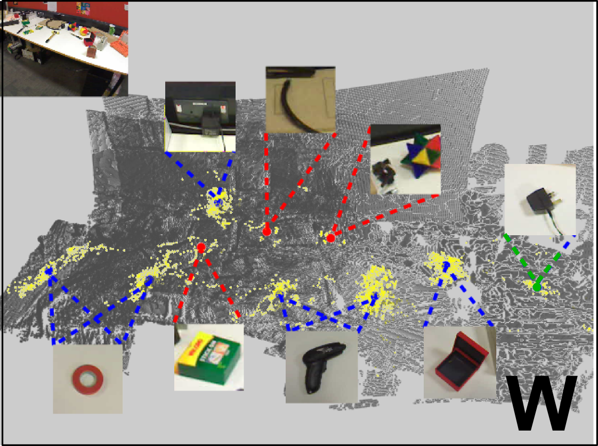
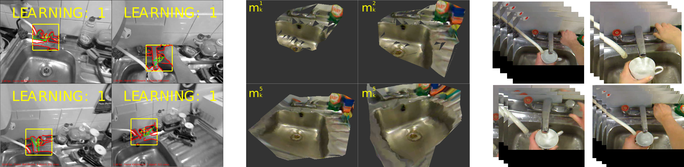
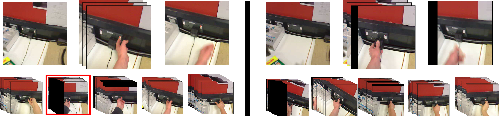
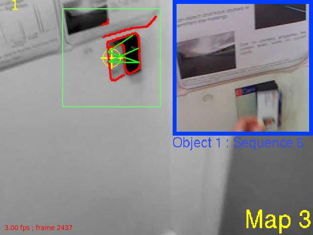
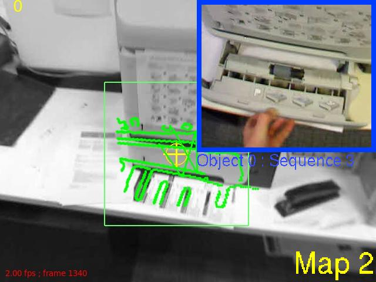
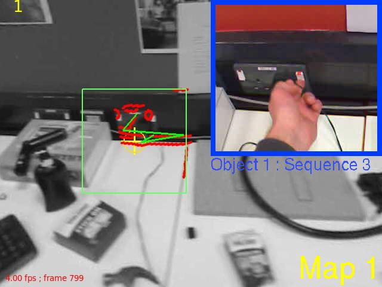
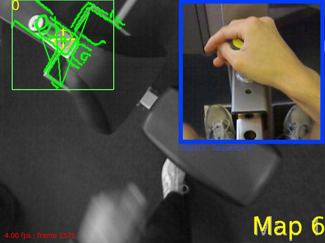

Publications
- T Leelasawassuk, D Damen, W Mayol-Cuevas (2017). Automated capture and delivery of assistive task guidance with an eyewear computer: The GlaciAR system. Augmented Human. ArXiv, video
- L Chen, K Kondo, Y Nakamura, D Damen, W Mayol-Cuevas (2017). Hotspots Detection for Machine Operation in Egocentric Vision. Machine Vision Applications (MVA) pdf (TBA), video
- D Damen, T Leelasawassuk, W Mayol-Cuevas (2016). You-Do, I-Learn: Egocentric Unsupervised Discovery of Objects and their Modes of Interaction Towards Video-Based Guidance. Computer Vision and Image Understanding (CVIU), vol 149 pp 98-112 August 2016. [pdf, arxiv preprint]
- Damen, Dima and Leelasawassuk, Teesid and Haines, Osian and Calway, Andrew and Mayol-Cuevas, Walterio (2014). You-Do, I-Learn: Discovering Task Relevant Objects and their Modes of Interaction from Multi-User Egocentric Video. British Machine Vision Conference (BMVC), Nottingham, UK. [pdf] [abstract]
- Damen, Dima and Haines, Osian and Leelasawassuk, Teesid and Calway, Andrew and Mayol-Cuevas, Walterio (2014). Multi-user egocentric Online System for Unsupervised Assistance on Object Usage. ECCV Workshop on Assistive Computer Vision and Robotics (ACVR), Zurich, Switzerland. [preprint]
Dataset
The Bristol Egocentric Object Interactions Dataset will be publically available.
The method
| A |
Objects are discovered by clustering. We investigate using appearance,
position and attention, and present results using each and a combination
of relevant features. Both static and moveable objects can be discovered |
|  |
| B | Multiple users enable learning varying
views in the appearance model (left); a 3D model (middle) and various video snippets showing the different interactions with the same object (right)
|
| 
|
| C | For the "socket", the two common modes of interaction ('switching', 'plugging') are found (left
& right). The representative video snippet is shown (top) with the other snippets in the same
cluster (bottom) |
|  |
| D | In the assistive mode, when an object is gazed-at and recognised, a video snippet is inserted showing the most relevant common mode of interaction. (Full Video Sequence above)
|
|  |
|
|